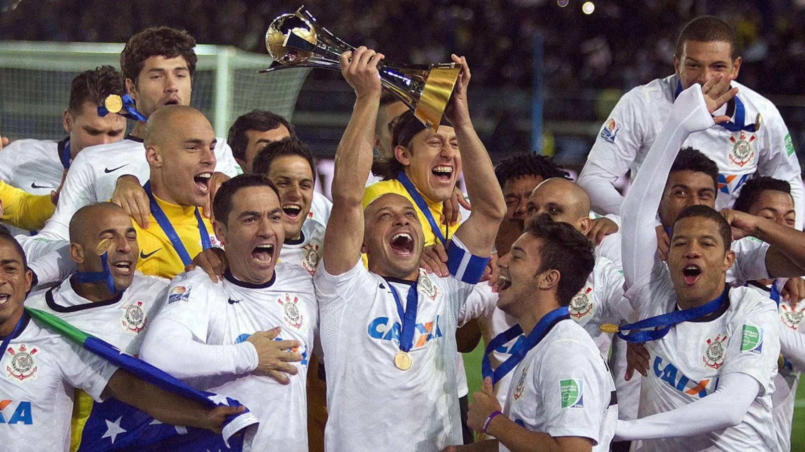

Campeão Mundial 2012
postado em 16 dezembro 2012

Após a conquista inédita e invicta da Libertadores, o Corinthians foi até o Japão disputar o Mundial de Clubes da Fifa no mês de dezembro. A primeira partida, realizada em Toyota, foi contra a equipe egípcia Al Ahly. O atacante Guerrero marcou o gol que garantiu o Alvinegro na final do torneio.
Em um jogo muito equilibrado, Timão e Chelsea se enfrentaram na grande decisão. Mais uma vez, o peruano Guerrero marcou de cabeça e garantiu o título para a Nação Alvinegra em Yokohama.
O goleiro Cássio, com uma atuação espetacular, recebeu o troféu Bola de Ouro da competição. A escalação da final foi: Cássio, Alessandro, Chicão, Paulo André e Fábio Santos; Ralf, Paulinho e Danilo; Jorge Henrique, Emerson e Guerrero.
Leia mais
Campeão da Libertadores 2012
postado em 4 de julho de 2012

Após o empate em 1 a 1 em Buenos Aires no primeiro jogo da final, o Coringão venceu o Boca Juniors (ARG), no Pacaembu, com dois gols do atacante Emerson no dia 04 de julho e fez o Bando de Loucos soltar o grito de campeão da Libertadores pela primeira vez na história. A escalação da última partida foi: Cássio, Alessandro, Chicão, Leandro Castán e Fábio Santos; Ralf, Paulinho, Danilo e Alex; Jorge Henrique e Emerson.
Em uma campanha impecável, o clube do Parque São Jorge derrotou oito adversários e empatou seis duelos. No total, a equipe marcou 22 gols e sofreu apenas quatro. Os resultados da primeira fase foram: Deportivo Táchira (VEN) 1 x 1 Corinthians/Corinthians 6 x 0 Deportivo Táchira (VEN), Corinthians 2 x 0 Nacional (PAR)/Nacional (PAR) 1 x 3 Corinthians e Cruz Azul (MEX) 0 x 0 Corinthians/Corinthians 1 x 0 Cruz Azul (MEX).
Nas oitavas de final, empate sem gols com o Emelec (EQU) fora de casa e vitória por 3 a 0 no Pacaembu. Na fase seguinte, 0 a 0 com o Vasco no Rio de Janeiro e 1 a 0 em São Paulo com um gol de cabeça do volante Paulinho que vai ficar para sempre na memória da Fiel Torcida. Para chegar à final, fato que também nunca havia acontecido, o Corinthians venceu o Santos na Vila Belmiro por 1 a 0 e empatou em 1 a 1 no Pacaembu.
Leia mais